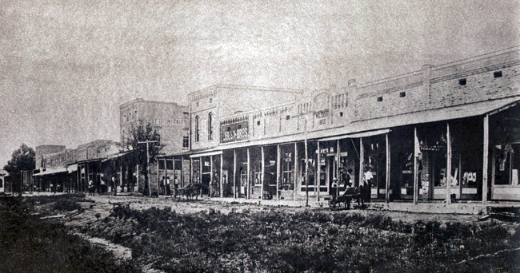
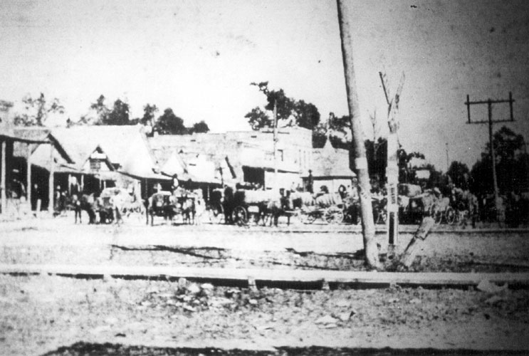

What this is
This site is a searchable reference for the history of Cabot, Arkansas — its city council, schools, newspapers, and public life. It answers questions like who was mayor in a given year, who held each council seat, and what did the council actually do at a meeting, from the records themselves.
Search the records
The search page runs over 931 government documents (657 with full text today) — 700 city council packets, agendas and minutes from 2015–2026, 174 school board minutes, 49 other city body documents, and 8 state legislative audit reports — plus 590 news and source pointers: 466 Arkansas Leader issues (date and link only — the paper is subscription content), Arkansas Democrat-Gazette and local TV coverage as links with short summaries, and the project's registry of online sources.
Cabot at a glance
- 1873 — Cabot begins as a water stop on the Cairo & Fulton Railroad; a post office opens the same year.
- 1875 — First schoolhouse, built by Professor G. W. Newton.
- November 9, 1891 — The town incorporates.
- 1862 → 1905 or 1907 — Some 1,500 Confederate soldiers who died of disease near Old Austin in 1862 were later moved to what is now Camp Nelson Confederate Cemetery. The city's own history page says the remains were relocated in 1907; the Encyclopedia of Arkansas and Find a Grave say 1905. The sources disagree, so this site carries the date as disputed rather than picking one.
- March 29, 1976 — An F-class tornado levels more than 15 blocks of downtown; five residents are killed. Mayor Willie Ray leads the recovery. CabotFest is established in 1978 to celebrate the city's resilience.
- 2020 census — Population 26,569, the largest city in Lonoke County.

Timeline drawn from the City of Cabot's published history page, which is a public record and is indexed in this site's sources.
Reference pages
- Mayors — who has held the mayor's office, with the evidence for each name and the gaps stated honestly.
- Council seats by year — who held each of the eight seats, 2015 to today.
- Election 2026 — who is running for Cabot's city and county offices in the November 3, 2026 election, from the papers' filing reports.
- Topics — narrative pages on the stories people ask about: what happened, what critics said, and what the record shows.
- Sources & method — where every layer of this site comes from, and how it may be used.
- Ask a question — how to get a researched, sourced answer added to the site.